全球每5人就有1人罹患癌症，你擔心自己的健康嗎？
 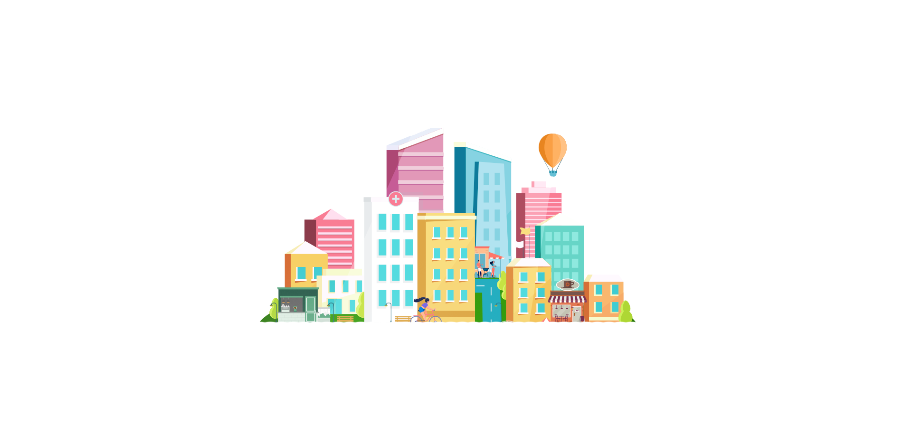
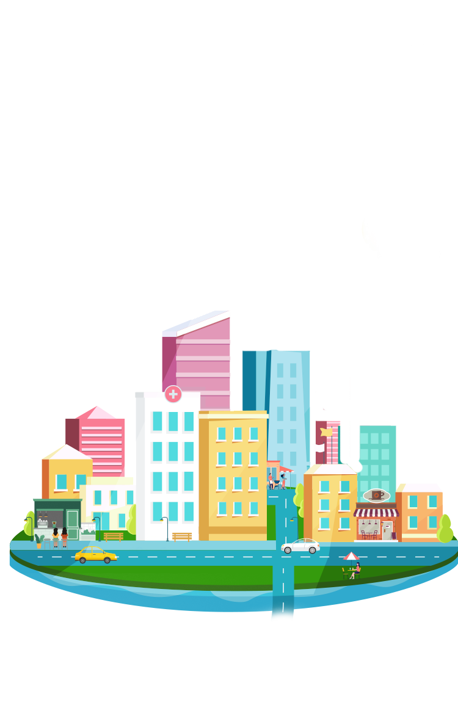
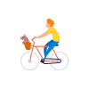
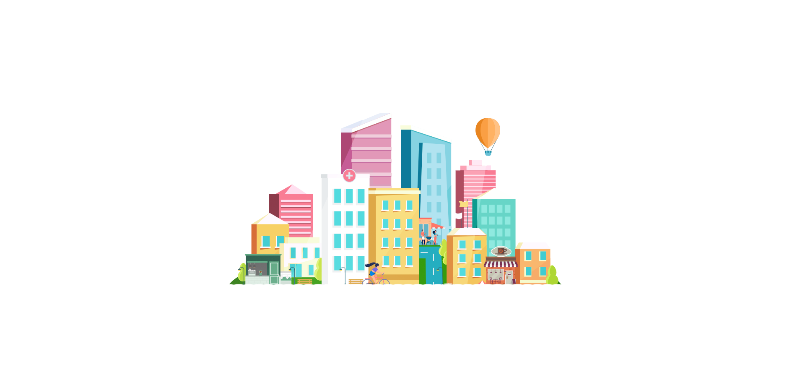
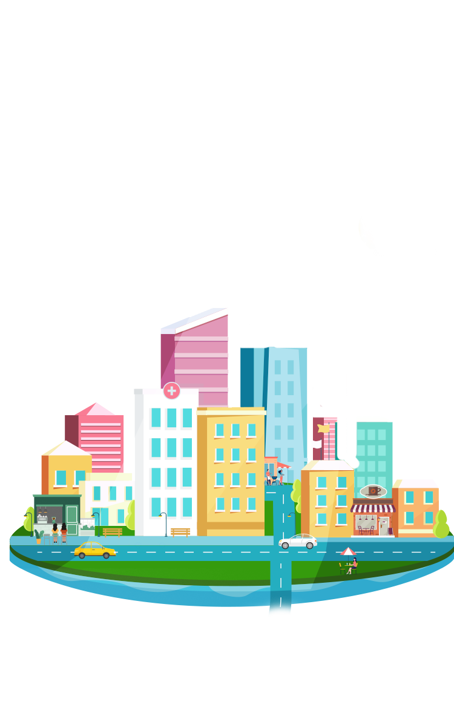
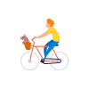
健康守護圈一路陪你平安走過防
癌、抗癌至康復，迎接新人生！
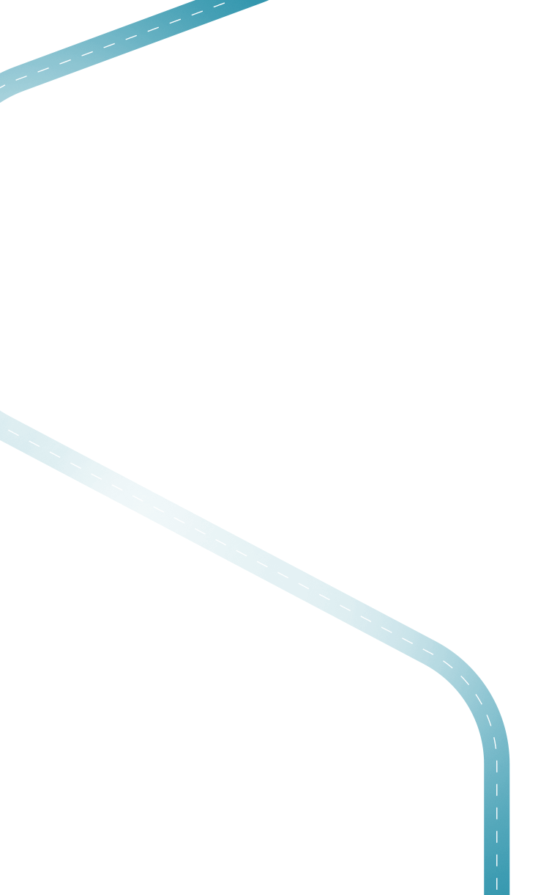
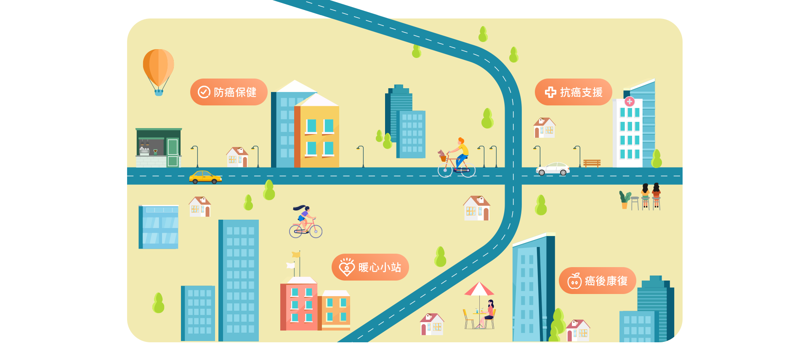
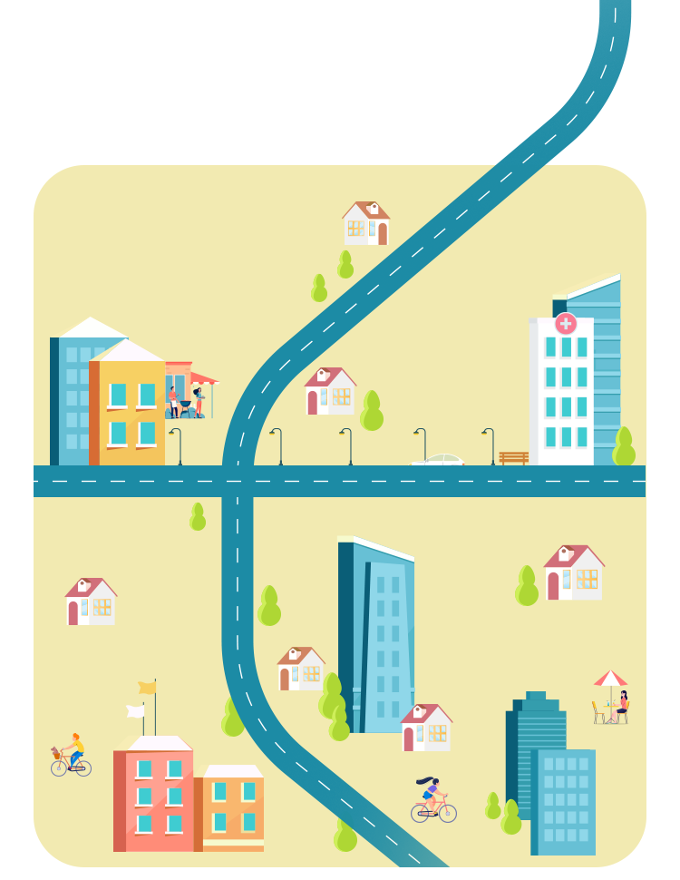
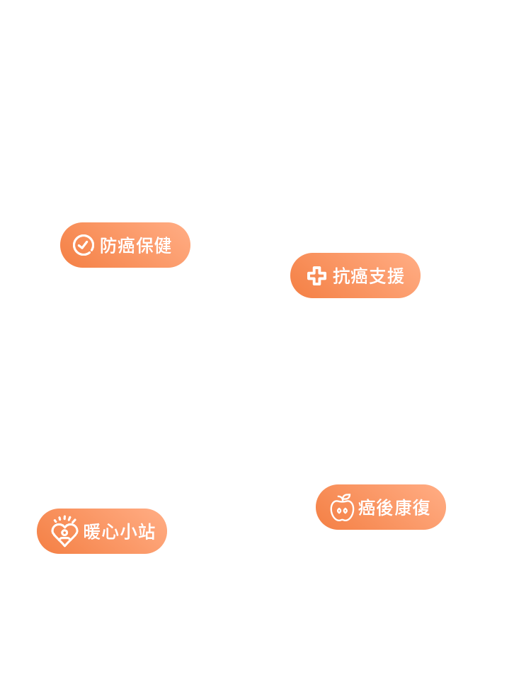

精準預防掌握防癌密碼！
從日常飲食、運動著手增強免疫力，更能透過專業腫瘤細胞或基因檢測幫助您及早發現癌症徵兆，降低罹癌風險！
術前術後抗癌祕訣公開！
透過術前疾病第二意見諮詢，面對醫療重大決策更安心，術後保持正確飲食和照顧，有效提升抗癌力！全面守護輕鬆恢復健康！
癌症治療後復健工作不可少，透過身心靈追蹤及物理治療，讓癌症治療效果加倍，向癌症復發say no！
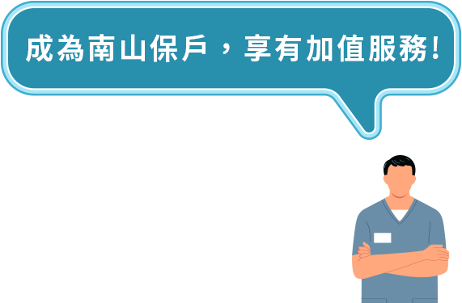
- 專案內容、詳細規定依各特約營運業者為準，活動內容如有任何異動不另行個別通知；本公司享有對本活動解釋、取消、終止、更改或暫停之權利。
- 健康守護圈之加值服務或合作廠商提供之產品、服務或優惠訊息等，均非屬保險契約權利義務之一部分。本公司與合作廠商間無代理或類似關係，合作廠商提供之產品、服務或優惠訊息，係由合作廠商各自提供及負責。
- 參加本專案者，必須遵守本專案注意事項及其他有關之規定，如有違反，立即自動喪失本專案資格。
- 參加本專案者保證所有填寫或提出之資料均為真實且正確，並未有冒用或盜用任何第三人之資料，如有不實或不正確之情事時，將自動喪失本專案資格，南山人壽不負任何責任，且如因此致生損害於南山人壽或任何第三人時，參加本專案者應負一切相關責任。
- 為保護您的權益，請詳閱南山人壽個人資料保護聲明。
- 如有因不可歸責於南山人壽之事由，致參加本專案者所登錄之資料有延遲、遺失、錯誤、無法辨識或毀損之情況時，南山人壽不負任何法律或賠償責任，參加者亦不得因此異議。